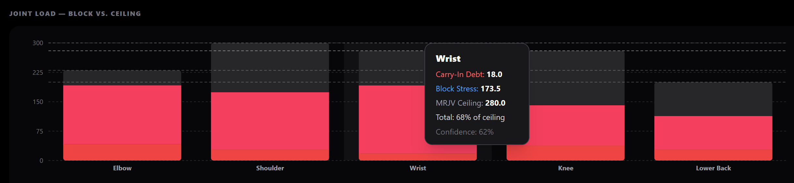

← Methodology
THE CMS PHILOSOPHY
Proactive Load
Proactive Load
Architecture.
Every adaptive training platform on the market reacts to pain. CMS is the first to treat joint load as a managed variable — tracked, trended, and acted on before you feel anything.
The Problem We Named
The industry treats joint pain as a red flag event — CMS treats it as an alterable trajectory.
Joint stress accumulates silently across a macrocycle. No program currently tracks it. No program names it.
Approaching the ceiling used to be inevitable. The deload was the hopeful reset — reduce load, cross your fingers, get back to it.
CMS makes the trajectory visible. Approaching it becomes the goal. The deload becomes the guaranteed reset.
Joint Load
CMS tracks joint stress as a running variable across your entire macrocycle — not session-by-session pain, but cumulative load against a personal ceiling. The system knows where you are in the block before you pick up a bar.
Learned Ceiling
Your ceiling isn't fixed — it's learned. The engine starts with population baselines and shifts toward your personal threshold with every block completed. At six months in, the system knows your joints better than any coach who hasn't watched your training log.
Carry-In Debt
Stress doesn't fully reset at the deload. CMS carries forward unresolved joint load into the next block, compressing your effective ceiling. You don't start fresh — you start accurately.
Auto-Rotation
When the trend demands it, the program rotates automatically. No flag to review, no decision to make. The exercise changes before the joint signals distress. You keep training. The system keeps managing.
Comp Anchor
Every block is shaped by your competition date. The macrocycle contracts or expands to land the peak exactly where it needs to be — and joint load is managed with that runway in mind.

No other training platform has ever built this view. The ceiling is real. The debt is real. The rotation is automatic.
Train with a system that sees the whole trajectory.
Beta access is limited. Early members shape the product.
Claim Your Beta Slot →